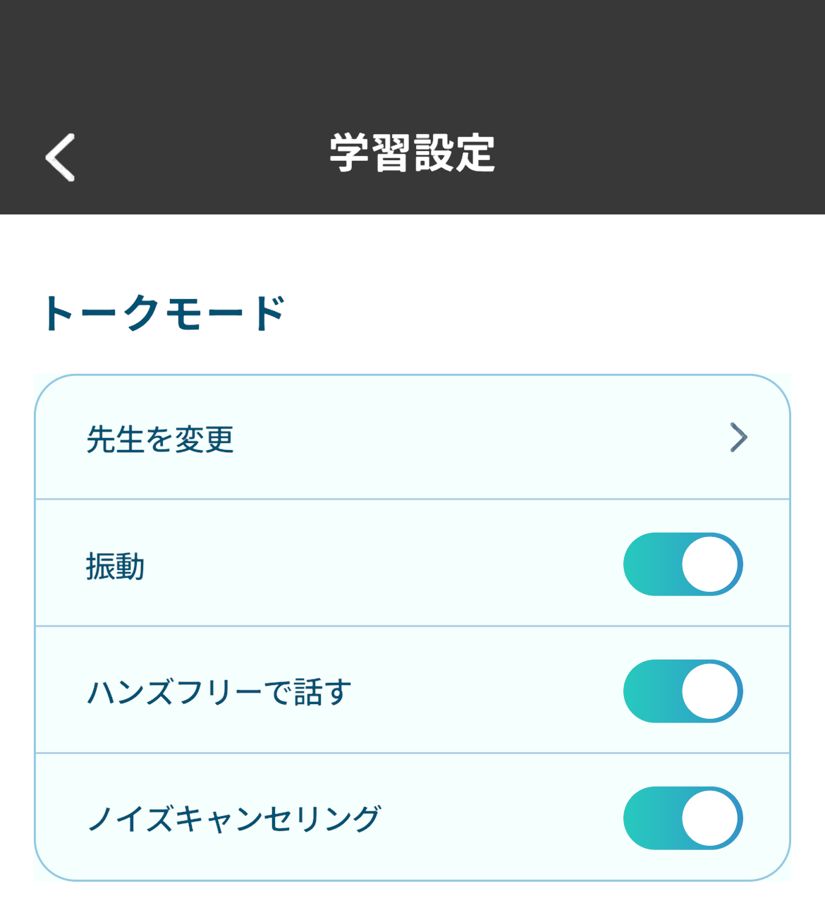
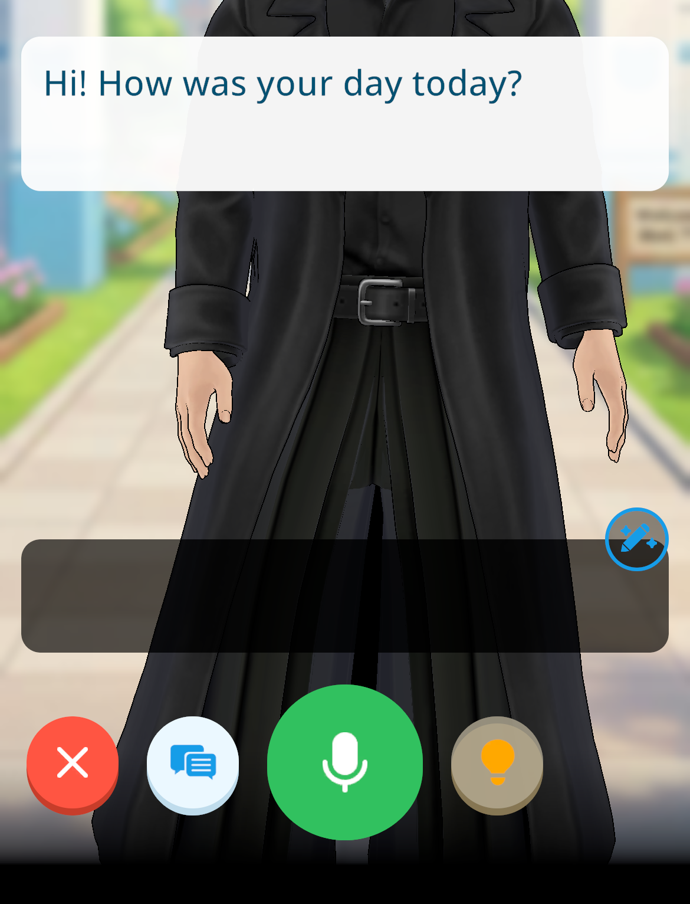
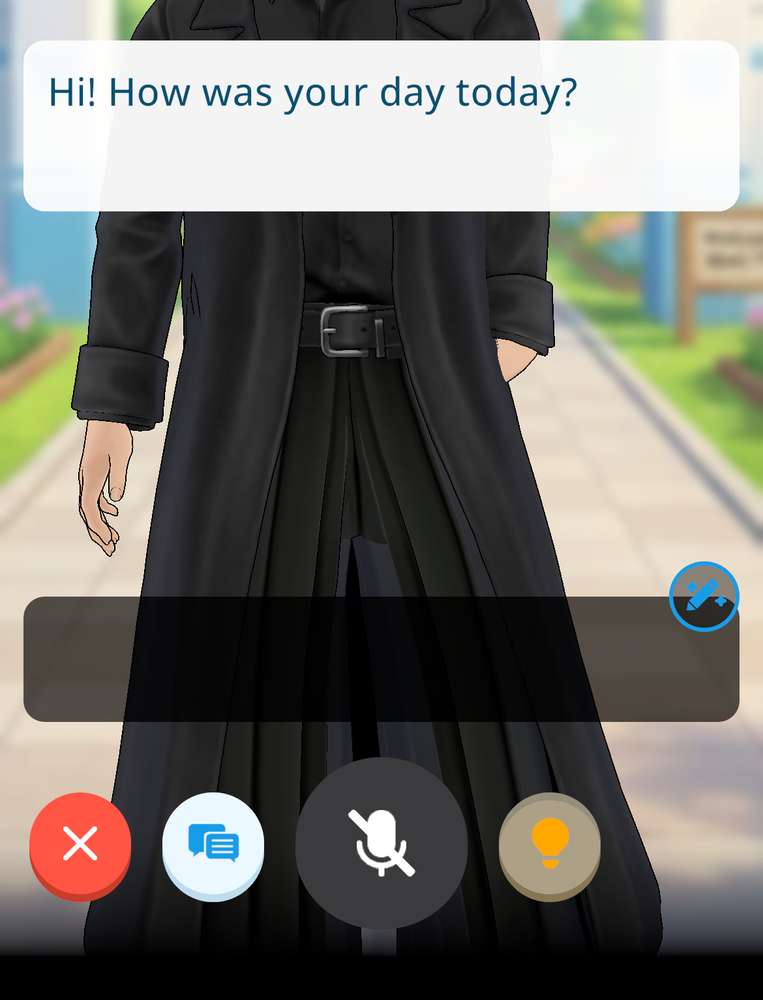
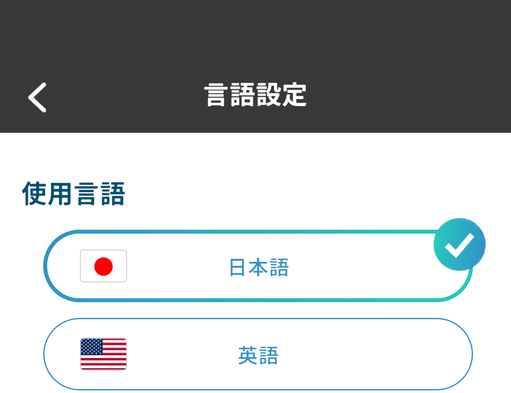
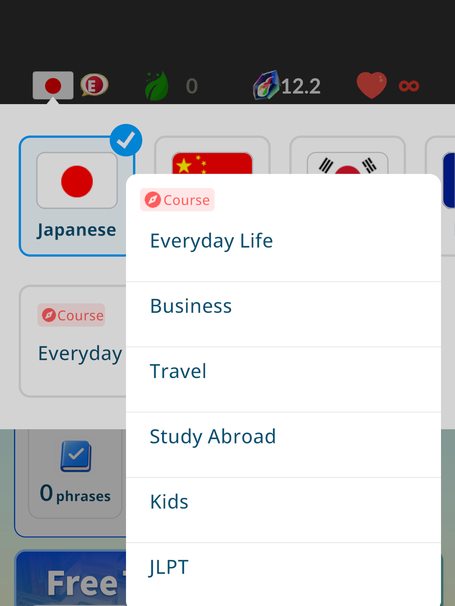
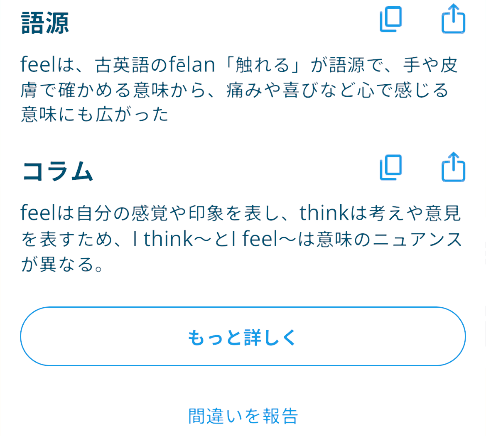

「ハンズフリーで話す」や
英語表示など、
4つの機能を追加・改善しました
2026/9/24 17:00
モチタン・モチスピを開発している神谷です。
v12.0.0 へのアップデートにより、マイクを押さずに話せる「ハンズフリー機能」、英語表示と日本語コース、単語詳細の「もっと詳しく」ボタンが追加されます。また、電池の消耗を抑える改善を行いました。
モチスピ：マイクを押さずに話せる「ハンズフリー機能」
トークで、マイクボタンを押さなくても話せるようになりました。
- オンにすると、マイクボタンを押さずに会話ができます。
- オンにしているとき、マイクボタンを押すとミュート（消音）にできます。



設定手順： マイページ > 設定 > 学習設定 > ハンズフリーで話す
※会話を始める前の設定画面からも切り替えられます。初期設定はオフです。
モチタン・モチスピ：表示言語に英語を追加
アプリの表示を英語にできるようになりました。英語で日本語、中国語、韓国語、フランス語、スペイン語、ドイツ語を学べます。
- 初めて切り替えるときは、続けて学びたい言語とコースを選びます。

操作手順： マイページ > 設定 > 言語設定 > 使用言語
モチタン・モチスピ：日本語コースの追加
使用言語を英語にすると、学びたい言語に日本語を選べます。
- モチタンの日本語コース：会話、JLPT、キッズ
- モチスピの日本語コース：日常会話、ビジネス、旅行、留学、キッズ、JLPT
- モチスピのトークでは、ネイサンと日本語で会話できます（日本語を学ぶ設定のとき、先生が日本語で話します）。

※日本語を学びたい海外の方や、身近な英語話者の方に向けたコースです。
モチタン・モチスピ：単語詳細に「もっと詳しく」を追加
単語詳細のいちばん下に「もっと詳しく」ボタンを追加しました。
- タップすると、その単語のモチタン英語辞典（Webサイト）のページをアプリ内で開きます。
- レベル別の例文、よく使う型、よく一緒に使う語、よくある間違い、よくある質問、学習データなど、アプリの単語詳細には無い情報が確認できます。

※辞典が無い言語の単語では表示されません。
モチタン・モチスピ：バッテリーの消耗を抑える改善
バッテリーの消耗を抑える改善を行いました。設定は不要です。
開発者 神谷創